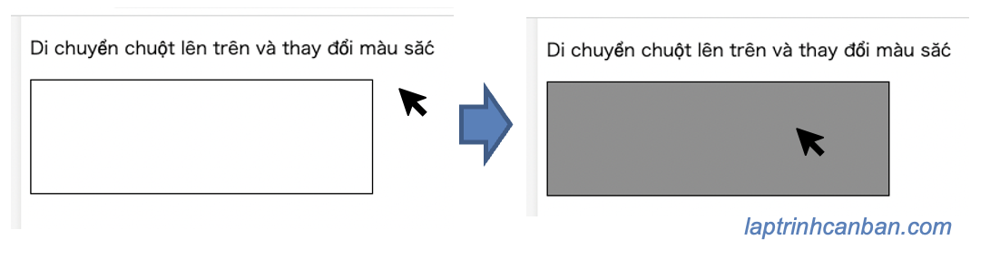

Cùng tìm hiểu về sự kiện mouseenter và mouseleave trong JavaScript. Đây là 2 sự kiện xảy ra khi con trỏ chuột được di chuyển trên đối tượng, và bạn sẽ biết khái niệm cũng như cách bắt 2 loại sự kiện này trong JavaScript sau bài học này.
Sự kiện mouseenter trong JavaScript là gì
Sự kiện mouseenter trong JavaScript xảy ra khi con trỏ chuột được di chuyển lên một phần tử. Sự kiện này xảy ra trên các Element Object trong JavaScript.
Tên sự kiện: mouseenter
Loại sự kiện: MouseEvent
Khả năng Bubbling: Không
Khả năng Cancel: Không
Sự kiện mouseenter rất giống với sự kiện mouseover trong JavaScript. Điểm khác biệt giữa chúng là sự kiện mouseover lại có khả năng Bubbling, dẫn đến việc xử lý sự kiện trong trường hợp phát sinh trên một phần tử cha chứa phần tử con là khác nhau.
Sự kiện mouseleave trong JavaScript là gì
Trong trạng thái con trỏ chuột nằm phía trên của một phần tử, sự kiện mouseleave trong JavaScript xảy ra khi con trỏ chuột được di chuyển ra khỏi phần tử đó. Sự kiện này xảy ra trên các Element Object trong JavaScript.
Tên sự kiện: mouseleave
Loại sự kiện: MouseEvent
Khả năng Bubbling: Không
Khả năng Cancel: Không
Sự kiện mouseleave rất giống với sự kiện mouseout trong JavaScript. Điểm khác biệt giữa chúng là sự kiện mouseout lại có khả năng Bubbling, dẫn đến việc xử lý sự kiện trong trường hợp phát sinh trên một phần tử cha chứa phần tử con là khác nhau.
Bắt sự kiện mouseenter và mouseleave trong JavaScript
Để bắt sự kiện mouseenter và mouseleave trong JavaScript, chúng ta cần phải có một trình xử lý sự kiện (Event Handlers) giúp xử lý khi sự kiện xảy ra, và phải đăng ký trình xử lý sự kiện này vào Element cần quan sát.
Tuỳ vào cách đăng ký trình xử lý sự kiện mà chúng ta có 3 phương pháp bắt sự kiện mouseenter và mouseleave trong JavaScript sau đây:
Phương pháp 1: Sử dụng thuộc tính onmouseenter và onmouseleave
Chúng ta có thể sử dụng thuộc tính onmouseenter và onmouseleave của Element để bắt sự kiện mouseenter, nếu trình xử lý sự kiện(Event Handlers) đã được đăng ký cho các giá trị thuộc tính này của Element.
Ví dụ cụ thể:
<div id="mybox" onmouseenter="mouseEnter()" onmouseleave="mouseLeave()"> |
Trong ví dụ này, trình xử lý sự kiện mouseSeenter() được đăng ký cho thuộc tính onmouseenter, và trình xử lý sự kiện mouseLeave() được đăng ký cho thuộc tính onmouseleave của Element có id="mybox", nên khi các sự kiện này xảy ra đối với Element này, trình xử lý sự kiện sẽ bắt và xử lý chúng.
Phương pháp 2: Sử dụng thuộc tính onmouseenter và onmouseleave của Element thu được từ DOM
Cũng với phương pháp dùng thuộc tính onmouseenter và onmouseleave để đăng ký trình xử lý sự kiện, tuy nhiên lần này chúng ta không đăng ký trực tiếp vào thuộc tính của Element, mà bằng cách sử dụng DOM để lấy Element rồi mới đăng ký.
Ví dụ cụ thể:
<div id="mybox"></div> |
Trong ví dụ này, chúng ta dùng phương thức getElementById để lấy Element có id="mybox" từ DOM. Sau đó mới dùng thuộc tính onmouseenter và onmouseleave của Element đó để đăng ký trình xử lý sự kiện giúp bắt các sự kiện khi nó xảy ra.
- Xem thêm: getElementById trong JavaScript
Phương pháp 3: Sử dụng phương thức addEventListener
Với phương pháp này, chúng ta cũng dùng DOM để lấy Element cần đăng ký trình xử lý sự kiện. Sau đó khai báo tên sự kiện cũng như tên trình xử lý sự kiện vào Element bằng phương thức addEventListener là xong.
Ví dụ cụ thể:
<div id="mybox"></div> |
Trong ví dụ này, chúng ta dùng phương thức getElementById để lấy Element có id="mybox" từ DOM. Sau đó dùng phương thức addEventListener của Element đó để đăng ký trình xử lý sự kiện mouseSeenter tương ứng với tên sự kiện onmouseenter, và trình xử lý sự kiện mouseLeave tương ứng với tên sự kiện onmouseleave nhằm giúp bắt các sự kiện khi nó xảy ra.
- Xem thêm: addEventListener trong JavaScript
Trong trường hợp bắt sự kiện bằng phương thức addEventListener trong JavaScript, một Event Object chứa các thông tin về sự kiện đã xảy ra sẽ được trả về.
Đối với các sự kiện mouseenter và mouseleave, một MouseEvent Object kế thừa từ Event Object sẽ được trả về. Chúng ta có thể thao tác với các thông tin chứa trong sự kiện qua đối tượng MouseEvent này.
Ví dụ chúng ta có thể lấy và xem thông tin về sự kiện đã xảy ra thông qua thao tác với đối tượng MouseEvent được trả về này.
<div id="mybox"></div> |
Ví dụ bắt sự kiện mouseenter và mouseleave trong JavaScript
Hãy cùng xem một ví dụ cụ thể với mã HTML về cách bắt sự kiện mouseenter và mouseleave trong JavaScript như sau. Trong ví dụ này chúng ta sử dụng tới phương pháp 3: Sử dụng phương thức addEventListener để bắt sự kiện. Các phương pháp khác cũng tiến hành tương tự.
|
Với mã lệnh này, khi bạn di chuyển chuột lên trên phần tử có id="mybox" thì sự kiện mouseenter sẽ xảy ra và làm thay đổi màu của phần tử.
Ngược lại khi di chuyển chuột ra khỏi phần tử này thì màu sắc của nó sẽ được thay đổi trở về trạng thái ban đầu.

Tổng kết
Trên đây Kiyoshi đã hướng dẫn bạn cách bắt sự kiện dblclick trong JavaScript rồi. Để nắm rõ nội dung bài học hơn, bạn hãy thực hành viết lại các ví dụ của ngày hôm nay nhé.
Và hãy cùng tìm hiểu những kiến thức sâu hơn về JavaScript trong các bài học tiếp theo.
HOME>> học javascript - lập trình javascript cơ bản>>13. sự kiện trong javascript